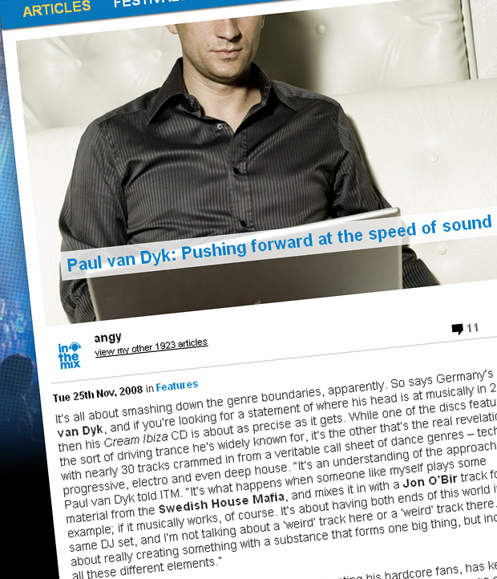

Paul van Dyk: Pushing forward at the speed of sound
{kind=link}

It’s all about smashing down the genre boundaries, apparently. So says Germany’s Paul van Dyk, and if you’re looking for a statement of where his head is at musically in 2008 then his Cream Ibiza CD is about as precise as it gets. While one of the discs features the sort of driving trance he’s widely known for, it’s the other that’s the real revelation, with nearly 30 tracks crammed in from a veritable call sheet of dance genres – techno, progressive, electro and even deep house. “It’s an understanding of the approach,” Paul van Dyk told ITM. “It’s what happens when someone like myself plays some material from the Swedish House Mafia, and mixes it in with a Jon O’Bir track for example; if it musically works, of course. It’s about having both ends of this world in the same DJ set, and I’m not talking about a ‘weird’ track here or a ‘weird’ track there. It’s about really creating something with a substance that forms one big thing, but includes all these different elements.”
It’s an approach that, while it runs the risk of alienating his hardcore fans, has kept Paul van Dyk on the cutting edge in 2008. But it carries with it a degree of baggage over being labeled a ‘trance DJ’. Why all the discomfort? PVD was there through the genesis of the sound during the 90s, and was an unstoppable leviathan when the Gatecrasher style of euphoric trance was sweeping the world late in the decade. He managed to hold face as a true superstar DJ even when trance hit the doldrums a few years later and he followed it right through to its recent revitalisation; so whether he likes it or not, he’s heavily associated with the roaring, euphoric buildups that have been a mainstay in his sets over the years. But genre tags, and the pigeonholing that often goes along with it, are clearly a touchy subject for PVD; he jumps straight on the defence when he’s asked about the increasingly eclectic nature of his sets.
“The thing is, it’s something that I’ve always done. What I’ve been saying for years and years … it’s not about calling it trance or calling it techno. I just call it electronic music. There’s a wide possibility of sounds, elements, melodies, drums. Basically, you have to do something with it to bring it all together. Now people understand it better, or hear it more clearly in my music. But for me it was always like this… You can see interviews back in ’94 where I said, ‘I’m not a trance DJ’.”
It’s a prickly response to the straightforward observation that his sets are a lot more diverse than they were several years ago. Nonetheless, for someone who’s already such a veteran, Paul van Dyk continues to inspire and he’s demonstrated his commitment to pushing forward at the speed of sound. Coming off the back of his superb In Between album from last year, his all-embracing approach with his track selection has seen his performances transformed into what’s nearly a tranced-up, euphoric take on the mashup style of acts like 2 Many DJs. And let’s not forget the truckloads of technology that’s allowed him to facilitate this; he’s utilised everything at his disposal in the fashion of a man who’s truly embraced the future, and it represents a complete overhaul of how he approaches the craft.
“Throughout the years I developed the same passion for being a musician and working in the studio that I have for DJing. When I could finally use that technology within the DJ set, it was the ultimate thing for me.” A little over a year ago when ITM spoke to PVD, he was rocking a setup of two Ableton-ready laptops hooked up to interface together, alongside an Alan & Heath 3D-mixer with a customised midi mapper, two remote-control keyboards driving a bank of software sythesisers, a UC 33 Midi Controller as well as an Akai sampling unit. It’s a mind-blowing setup that brings the DJ set that much closer to a live performance, enabling him to create music and remix on the fly. “It’s an ongoing thing which is always getting infiltrated by a new machine or a new way of doing something. It’s always changing. When you see my technical rider, it’s always the one for that particular moment. It may not be the technical rider that I need for the following gig,” he laughs.
No longer is it just a matter of mixing two tracks together as there’s all manner of surprises flying in thick and fast, and it’s opened up plenty of new possibilities for mashing the genres together. “There’s definitely more work involved. The tracks we used to play were between 7 to 10 minutes long, so basically you mix in the record and then you have at least five or six minutes. So what are you gonna do? Just stand around,” he laughs. “I’m too busy to do that now, I’m either playing something, restructuring the drums or actually remixing the whole setup of the track. I always have something to do. It’s quite intense.”
His longstanding Vandit label is also going gangbusters this year, and the imprint has cultivated two top-ranking mascots in the form of Jon O’Bir, who released his Ways & Means album, as well as Italy’s Giuseppe Ottaviani who is touring alongside with his label boss for Stereosonic. “With Giuseppe, he was part of Nu-NRG for a long time and when they split up, we started to work on his career. It’s just what we do, it’s the philosophy behind Vandit. We take our knowledge, our power and our possibilities to develop artists and to support them.”
The suggestion that running a record label is all part of the superstar DJ experience these days, and perhaps essential to maintaining your profile, receives a sharp response and PVD’s tough competitive streak shines through. “I remember sitting on a panel at the Amsterdam Dance Event with Armin van Buuren and talking about this. And he said the only reason he actually supported Armada is to support him. That was not the reason we started Vandit at all. There’s so much music coming out, and so much music that never actually sees the light of day, and we wanted to make this music available,” he told ITM. “At then end of the day, my music isn’t even coming out on Vandit. In this sense it’s not to support me, it’s a label that supports electronic music, and the music that we love. So it’s a different approach.”
Armin might have a few words to say about that, but it’s still an approach that, similar to his techno-savvy reinvention of his DJ performance, is working wonders for PVD in 2008. Giuseppe Ottaviani in particular is bigger than ever and his euphoric No More Alone, which boasts one of the biggest breakdowns this side of For An Angel, is one of the year’s biggest anthems. Looking to his Cream Ibiza release again, the track made for one of its largest moments and it’s dominated the clubs ever since. “With these sort of CDs, in order to reach a [European] summer release you have to try and look into the future and figure out what’s going to be the big track in Ibiza over the summer. And lucky enough, I think I made quite a good guess,” he laughs.
Catch Paul van Dyk pushing forward at the speed of sound on the Stereosonic tour around the country…
Thur Nov 27 – Family, Brisbane
Fri Nov 28 – Sublime & Stereosonic pres. Satellite v3.0
Sat Nov 29 – Stereosonic, Melbourne
Sat Nov 29 – Stereosonic, Adelaide
Sun Nov 30 – Stereosonic, Perth